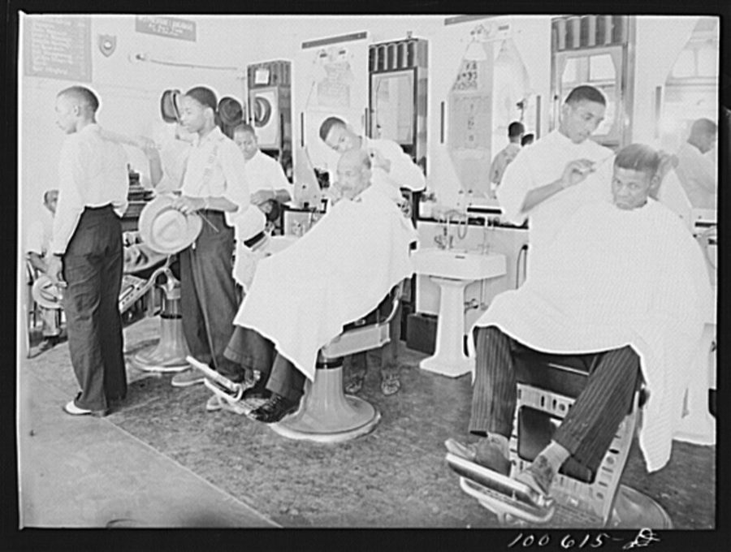
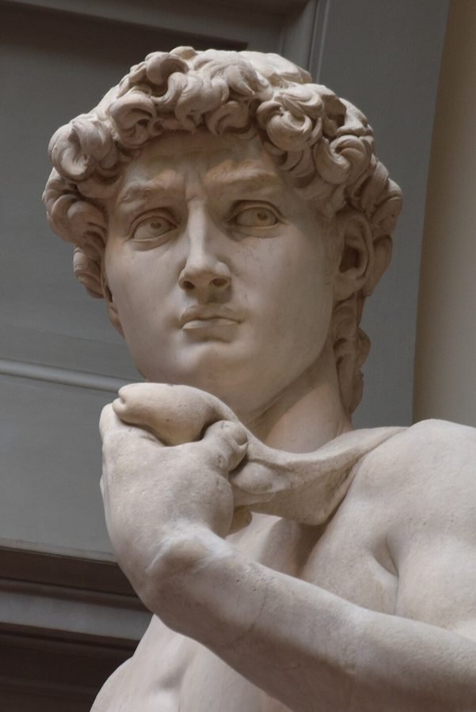

读之前
这一页是报告 14 的中段：6 月 20 日到 23 日，五条。前两条是同一天，查理照着报上那条消息，去布朗克斯找父亲 Matt。后三条回到 43 街的公寓：Algernon 的新迷宫，和从消防梯爬过来的 Fay。读的时候抓两条线：一条是查理想从父亲那里得到什么；一条是他怎么一次次看着自己，好像在看另一个人。
手术后三个多月，智商远远超过常人。6 月 13 日他带着 Algernon 从芝加哥的大会上走掉，回了纽约。报上登出母亲和妹妹的照片，还说父亲 Matt 不和她们同住，在布朗克斯开理发店。他租下 43 街和第十大道的公寓，给 Algernon 搭了立体迷宫，认识了对门的画家 Fay。他想给 Alice 打电话，又一次次忍住。
读的时候带着这几个问题。不用先找答案，读完回来对照「检查一下理解」。
动身之前，查理记得的 Matt 是一个什么样的父亲？他想从这次见面里得到什么？§1–§2
留意这一页里查理有几次像站在旁边看着自己。分别是在什么时候，他怎么形容？§2 §5
14a 页里查理说要给 Algernon 找食物以外的奖赏。6 月 21 日他记下了什么，又留下了什么疑问？§3
Fay 怎么看查理，查理又怎么看 Fay？两个人各自说对了什么？§4 §5
分节地图
这一页有五条带日期的报告。读完一条打个勾；每条下面的英文是那一条开头的几个词，在 Kindle 里搜它就能跳过去。没读的那几行先模糊着，免得提前看到情节，点一下就能看清。全页约 4300 词，一次读完。
6 月 20 日约 1400 词 Perhaps I should have waited before … 从怎么找到那家店写起。留意查理进门后的每一次犹豫，和剃刀贴上脖子时他想到了什么。 6 月 20 日（续）约 800 词 When the haircut, shave, sun treatment, … 理发做完以后。留意两面镜子里的样子，和最后 Matt 叫住他的那句话。 6 月 21 日约 100 词 I’ve added time sequences of increasing … 两段实验记录。留意 Algernon 为什么而学，和 Burt 在大会上说过的那件事。 下午 5:30约 100 词 That crazy Fay came in through … Fay 又从消防梯过来了。留意她带来了什么、说是为了什么。 6 月 23 日约 1800 词 Late last night the sound of … 从前一天深夜写起。留意查理哪几处觉得自己在「旁观」，和 Fay 后来告诉他的事。
背景：书里默认你知道的事
按在书里出现的顺序排，标题前是节号。人名后面括号里是中译本的译名，读者想对照译本时用。
§1 这一页的人14a 页那条报纸消息说，父亲 Matt 不和妻女同住，在布朗克斯开理发店。这一条开头，查理想起 Matt 一直想开自己的店。下面几张卡片只写你此刻已经知道的。
Matt Gordon 马特 查理的父亲。报告 13 的回忆里，他推销理发用品，生意不好；他和 Rose 吵架，说她把积蓄花在江湖医生身上，那些钱本可以让他开一家自己的理发店。
Rose Gordon 罗丝 查理的母亲。14a 页里报上登了她的照片，查理想起 Norma 出生、显出正常的智力以后，她对他就变了，想起父母为要不要把他送去 Warren 吵架。
Norma 诺尔玛 妹妹，比查理小约六岁，现在和母亲住在布鲁克林。
Uncle Herman 赫尔曼 报告 7–8 里 Donner 说，十七年前是 Herman 把查理领到面包店的，两年后 Herman 去世。Warren 之家见报告 1–6、7–8 的页面。
Margaret Phinney、Lois Meiner 玛格丽特·菲尼、洛伊丝·迈纳 Rose 怕被她们看笑话的两位太太，只在 Rose 的话里出现。
Fay Lillman 费伊 对门的画家，三十五岁上下，离了婚，门从不上锁，爱跳舞。6 月 19 日从消防梯爬窗过来，把 Algernon 的迷宫叫作「带活物的雕塑」，拿走了五块钱。
§1 推销员和《推销员之死》推销员（salesman）在当时的美国是一大行当：跑客户、拿佣金，靠口才和人缘吃饭。阿瑟·米勒（Arthur Miller）的剧本《推销员之死》（Death of a Salesman）1949 年在百老汇首演，同年得了普利策戏剧奖，写一个干了一辈子的老推销员 Willy Loman，晚年业绩一落千丈，被公司辞退。1951 年 Columbia 公司把它拍成电影，Fredric March 演 Willy。书里说 Matt 看了这部电影以后，更恨推销这一行；Rose 却觉得推销员好歹是个体面的职业。
§1 布朗克斯在哪里纽约市分五个区（borough）：曼哈顿、布朗克斯、布鲁克林、皇后区、斯塔滕岛。布朗克斯在曼哈顿北边，隔着哈莱姆河，是五个区里唯一主要在大陆上的。查理小时候的家在布鲁克林（报告 1–6 里他说「我想是在布鲁克林」，报上登的母亲和妹妹的住址也在那里），现在他住在曼哈顿西边。Matt 离家以后，去了另一个区。书里的 Wentworth Street 和 Scales Avenue 照书里的写，不必去地图上找。
曼哈顿
查理的公寓
43 街和第十大道
布朗克斯
Matt 的理发店在这一区
皇后区
布鲁克林
母亲和妹妹住在这一区
斯塔滕岛
新泽西
（河对岸）
本站示意图：纽约的五个区和这一页的几个地方。不按比例，形状只是大概；书里没说理发店在布朗克斯的哪一带。 §1 老式理发店门口红白条纹的旋转灯柱（barber pole）是理发店的招牌，通常的说法是它来自从前理发师兼做放血之类的小手术。当时美国的理发师有工会，加入工会的店挂工会的店牌，按工会定的价目收费，价目表就挂在墙上。剃须前把剃刀在皮带上来回荡（strop），让刃口顺直。刮破了皮，用止血粉（styptic powder，多是明矾一类）按一按；金缕梅水（witch hazel）是用北美一种灌木做的收敛水，常拍在刮过的脸上。太阳灯（sun-tan lamp）照的是紫外线，让脸色晒得好看些。

1942 年 7 月，华盛顿特区 U 街上的一家理发店。和书里的理发店无关，只看当时的理发椅、围布和镜子。Marjory Collins，公有领域，维基共享资源 §5 米开朗基罗的《大卫》米开朗基罗（Michelangelo）1501 到 1504 年雕成的大理石像，高约 5.17 米，刻的是《圣经》里打败巨人歌利亚的少年大卫，是一尊裸体像，常被当成男性人体美的典范。原作现在在佛罗伦萨的学院美术馆。§5 里 Fay 拿它打了个比方。

米开朗基罗《大卫》的头部和肩，2019 年摄于佛罗伦萨学院美术馆。George M. Groutas，CC BY 2.0，维基共享资源 §5 Fay 嘴里的演艺圈the Palace 指百老汇的 Palace 剧院，1913 年开张，是当年杂耍歌舞（vaudeville）的头号舞台，「在 Palace 演出」就等于在演艺界出了头。short subject 是电影院在正片前加映的短片：新闻片、动画、滑稽短剧。method acting（方法派表演）源自俄国导演斯坦尼斯拉夫斯基（Stanislavski）的体系，1947 年在纽约成立的演员工作室（Actors Studio）把它推广开，白兰度（Marlon Brando）、詹姆斯·迪恩（James Dean）常被当作这一派的代表：演员调动自己的经历和记忆，「变成」角色。
词与短语
三类：紫边的「查理拼的」是他拼错的词，先写还原的拼法；黄边的「每个字都认识」是熟词生义、俚语、别人话里的弦外之音；其余是这里用法特别的词。斜体小字是原句里的几个词，在 Kindle 里搜它就能找到原文，拼错的照拼错的抄。
§1 6 月 20 日
barber supply company
… sold for a barber supply company …
理发用品公司
给理发店供应剃刀、剪子、围布、发油的批发商。报告 13 的回忆里 Matt 说过自己卖 barbershop supplies。
account
… had a barbershop account under the …
（供货商的）客户
不是银行账户。做买卖的人把一家固定客户叫一个 account：这家公司的客户名单上，有一家理发店叫 Gordons Barber Shop。
claims examiner
… husband was a claims examiner for …
（保险公司的）理赔审核员
坐办公室、穿西装的差事。Rose 拿别人丈夫的职业来比，在意的是邻里面前的体面。
stick one’s nose up in the air
… Wouldn’t she stick her nose up …
翘起鼻子，看不起人
常说 have one’s nose in the air。这一段是查理转述 Rose 当年的口气，带着感叹号。
walk out on
… When he walked out on Rose, …
撂下（某人、某事）一走了之
同一句里用了两次：撂下 Rose，也撂下推销这一行。13b 页里查理说自己 walked out on 整个大会，是同一个短语。
take someone as he is
… willing to take me as I was.
接受一个人本来的样子
take 在这里是「接受、看待」。as I was 是「我当时那样」：不聪明的那个查理。
be let alone
… I should be let alone instead …
别去管他，由他去
不是「被一个人留下」。let alone 是不去打扰、不去逼，后面接着说：而不是逼他做别的孩子做的事。
barber pole
… there was a barber pole reflecting …
理发店门口的红白条纹灯柱
见「背景」。
candy cane
… reflecting a candy cane of light …
（圣诞节的）红白条纹拐杖糖
一根弯成拐杖形的硬糖，红白螺纹。这里是比方：灯柱映出一道红白相间的光。
mister
… not open at this hour, mister.
先生（对陌生男人的随口称呼）
理发师招呼生客的口气。说这话的是 Matt。
regulars
… appointment with one of my regulars, …
熟客，常客
regular 作名词，指常来的客人。
show
… but he didn’t show.
露面，来了
就是 show up，口语里常省掉 up。
the works
… “The works,” I said, nodding at …
全套（服务）
the works 口语里是「所有的一切」，在理发店、餐馆里就是「什么都来一份」。后面他一项项点了出来。
union-shop price list
… nodding at the union-shop price list, …
工会店的价目表
见「背景」。
strop
… as he stropped the razor against …
（在皮带上）荡刀
名词是磨剃刀的皮带，作动词是把刀在皮带上来回荡。后面说那声音是 harsh whisper（刺耳的低语）。
adroit
… adroit for such a short, heavy …
（手脚）灵巧的
for such a short, heavy man 是「以他这么矮胖的人来说」。
styptic powder
… cut with styptic powder.
止血粉
见「背景」。
witch hazel
… cotton soaked in witch hazel over …
金缕梅水
witch 是巫婆，hazel 是榛树，合起来却是一种北美灌木（金缕梅）和用它做的收敛水。见「背景」。
sleep through
… He has learned to sleep through …
（吵闹中）照睡不醒
through 是「从头到尾穿过去」：吵架吵完了，他也没醒。
turn someone out
… Turn him out into the street?
把人赶出去
不是「翻身」。这一句是 Matt 的反问。
put someone away
… “Put him away. Send him to …
把人送走（送进收容机构）
put away 本义是收起来、放好，说人时是「送进机构关起来」。14a 页那段回忆里 Rose 也说 Better for him to be put away。
better off
… He’ll be better off—
（那样）反倒好些
be better off 是「处境更好」。这是回忆里 Rose 吵到最凶时的话，前一句更重。
carving knife
… the long carving knife she cuts …
切肉刀
切整块烤肉（roasts）用的长刀。11a 页那首童谣里农夫的妻子用的也是 carving knife。译本：「剁鸡用的长切肉刀」。原文是切烤肉用的，没有鸡，「剁」也比原文多了一层狠劲。
§2 6 月 20 日（续）
whisk off
… Matt whisked the neckcloth off and …
（一下子）扯掉
whisk 是快速地一拂、一扫。neckcloth 是理发时围在脖子上的围布。
gag
… What is this? A gag?
恶作剧，玩笑
报告 9 的愚人节那一条里也有这个词。
three-fifty
… That’ll be three-fifty.
三块五（美元）
价钱口语里常这样省掉 dollars 和 cents。这是理发、刮脸、洗头、太阳灯一整套的价钱。
write someone off the books
… the son you wrote off the books?
（像坏账一样）从账上一笔勾销
write off 是会计用语：收不回来的账，从账本上注销。查理用记账的话说自己被家里放弃了。译本：「你们不要的那个儿子」。意思对，记账的比方没有了。
living and dead
… twenty languages, living and dead; …
现在还有人说的和已经没人说的（语言）
dead language 指拉丁文、古希腊文这类不再有人当母语说的语言。
whiz
… I’m a mathematical whiz, and …
高手，奇才
口语，常说 whiz kid（神童）。
pat someone on the head
… for him to pat me on the head …
拍拍头（夸小孩）
大人夸小孩的动作，说大人时常带点居高临下。后面跟着 Good boy。
diminish
… because my growth diminished him.
使（人）显得渺小
本义是「减少」。查理的说法是：他长高一截，别人就矮了一截。
What are you trying to pull?
… “What are you trying to pull?”
你想耍什么花招？
pull 在这里是「耍（把戏）」，和面包店那句 pull a Charlie Gordon 用的是同一个动词。
rub one’s thumb and forefinger together
… rubbing his thumb and forefinger together.
拇指和食指来回捻（要钱的手势）
像在数钞票，意思是「钱呢」。
keep the change
… told him to keep the change, …
不用找了
付了五块，一块五的零头当小费。
§3 6 月 21 日
time sequence
… I’ve added time sequences of increasing …
时间顺序（的要求）
书里没细说，大概是要按一定的先后、在一定的时间里才走得通的环节。three-dimensional maze 就是 14a 页里他用废塑料搭的立体迷宫。
its own reward
… success appears to be its own reward.
本身就是奖赏
让人想到谚语 Virtue is its own reward（美德本身就是回报）。这件事今天怎么看，见读后的「对照今天」。
erratic
… his behavior is erratic.
反复无常的
13b 页大会上说的就是这件事：Burt 的报告说 Algernon 的表现变得 variable（不稳定），台下有人问的正是这种 erratic behavior。
§4 下午 5:30
of sound health and good moral character
… of sound health and good moral character, …
身体健康，品行端正
证明文书、资格审查里的套话。查理拿它说一只白鼠，是在打趣。
get annoyed at
… How can you get annoyed at …
生（某人的）气
反问：她闯进来、把人拖出房间要教跳舞，可你就是没法真生她的气。译本：「你怎么可能感到无聊？」。annoyed 是恼火，不是无聊：原文说她再胡闹也让人生不起气，译本变成了有她就不会闷。
§5 6 月 23 日
sculpture with a living element
… He does sculpture with a living …
带活物的雕塑
14a 页里 Fay 拿 Algernon 的迷宫开的玩笑，这回当着生人又说了一遍。
manage an apology
… I managed an apology and pulled …
勉强说了句抱歉
manage 是「设法做到」，带着「好不容易」的意思。
at will
… or undressed, at will, with her …
随心所欲，想怎样就怎样
will 在这里是「意愿」：他能随意想象出 Fay 的样子，却想不起 Alice 的脸。
kimono
… a black silk kimono revealing lovely …
和服式的晨袍
美国英语里 kimono 常指宽松、系带的家常长袍，不一定是日本和服。
cigareet
… she whispered, “got a cigareet?”
cigarette 香烟
不是查理拼错，是照 Fay 的念法记下的，带点玩笑的腔调。
all you can do to hold them off
… all you can do to hold …
使出全身力气才勉强挡住
it’s all you can do to … 是「拼了命也只能勉强……」；hold off 是挡开。
pick up
… if you pick up a guy …
（在外面）搭上陌生人
pick up 常见的意思是捡起、接人，这里是在舞厅、酒吧里勾搭上。
advances
… you’ve got to expect advances.
（男人的）挑逗，求欢的举动
报告 9 里唐纳先生说的 advance 是升迁；复数的 advances 说男女时是主动示好、求欢。
make a pass at
… the right to make a pass …
（对女人）动手动脚，挑逗
pass 在这里不是「通过」，是一次试探性的出手。
I’ll keep that in mind
… I’ll keep that in mind. Can …
我记住了
字面客气，实际是把话题岔开：紧接着他就问要不要喝咖啡。
emotional level
… right for me at this emotional level.
（我此刻的）情感水平
查理在用研究报告的话说自己：好像他的感情也有一个可以测量的等级。
Your place or mine?
… “Your place or mine?” she asked.
去你那儿还是我那儿？
约人过夜的套话。
take the starch out of
… take the starch out of those …
让（挺括的东西）软下来
starch 是浆衣服用的浆粉，上过浆的领子笔挺。说人时 starchy 是拘谨、古板。Fay 说的是他屋里那些直线，也是他这个人。译本：「抖掉那些直线上的僵硬粉浆」。照字面译，比方保住了，但中文读者不一定一下看出是在说人拘谨。
bug
… That’s what’s bugging you.
让人心烦
bug 作动词是口语的「烦扰」，不是虫子，也不是程序错误。
boxed in
… you’re all boxed in.
被框死了，动弹不得
14a 页里 Fay 说她不喜欢直线围成的方盒子，像棺材。这里她把这个说法用到了查理身上，又扯上了 Algernon。
the curtain came down
… before the curtain came down was …
（喝断了片）不省人事
字面是「落幕」，这里指喝到失去知觉。
butts
… overflowing with crushed butts stood …
烟头
butt 是剩下的那一截，cigarette butt 就是烟头。
loaded
… “You were loaded. And boy …
喝醉了
loaded 本义是装满了，俚语里也指有钱。
queer
… boy did you act queer—I don’t …
古怪的
queer 本义是古怪、反常；当时口语里它和紧跟着的 fairyish 都是骂同性恋男子的贬称，所以 Fay 赶紧补一句：不是那个意思，是怪。这是当时的用词，今天 fairy 仍是贬称，queer 则被不少人收回作自称。
short subject
… What a short subject you’d have …
（正片前加映的）短片
见「背景」。
wow them at the Palace
… You’d wow them at the Palace.
在 Palace 剧院也能把观众镇住
wow 作动词是「让人叫好」。Palace 见「背景」。译本：「你铁定能让观众看得目瞪口呆」。意思到了，Palace 没有译出来。
method-acting
… like they do with method-acting—and …
方法派表演
见「背景」。Fay 的意思是：他像换了一个人，演得跟真的一样。
So help me!
… “Yeah! So help me!” she …
我发誓！
是宣誓词 so help me God（愿上帝助我）的省略，口语里表示「真的，没骗你」。
work oneself up
… who work themselves up by just …
（自己把自己）弄得兴奋起来
这里说的是性方面的。报告 9 的派对上有 got him worked up。
compulsive
… now I think you’re compulsive or …
（有）强迫性的
心理学用语，Fay 是随口借来用。14a 页里查理自己也说过，他有把屋子保持整齐的 compulsion。
veneer
… covered him over with a veneer …
（表面的）一层
本义是家具表面贴的一层薄木皮，好看，底下是另一种木头。
flip
… I thought you flipped.
发疯，失控
口语，也说 flip out、flip one’s lid（掀了盖子）。
book end
… a heavy book end she had …
书挡
立在一排书两头、不让书倒的东西，常是铁或石头做的，很沉。译本：「厚重精装书」。book end 是书挡，不是书。
peanuts
… afraid of losing his peanuts.
花生
字面就是花生。查理为什么怕丢了花生，书里没有解释，这里先照字面读。字面以外怎么读，读后「读完想一想」第 2 题有本站的读法。
查理的文字
拼错的词还是零，看句长和长词。6 月 20 日的两条平均 10.9 和 9.2 个词一句，6 月 23 日 9.4，都比 14a 页的三条（12.5 到 16.2）短。短在对话：理发店里 Matt 的招呼和问话，Fay 的一问一答，Peanuts? 一个词就是一句。夹在中间的 6 月 21 日只有 89 个词，长词占 9.0%，和 5 月 15 日并列到这里为止最高：three-dimensional、complexity、motivate，口气是实验记录。
6 月 20 日那段回忆又换成了「他」和现在时，像报告 9 的 4 月 13 日。可吵到最后安静下来时，冒出一句「我」：黑暗里我感到一阵颤抖传过整座房子。到这一页的结尾，连写现在的句子里也分出了两个人：「我」，和 Charlie。
记忆拼图
查理的童年是一段一段想起来的。每段一张卡片：想起了什么，是被眼前的什么勾起来的。年纪是从书里推的，推不出来的写「年纪不详」。读过的页的卡片会汇总到记忆拼图 ，按年纪排好。
地下室里的理发 Matt 当推销员那几年，在地下室给查理剪头发，说是为了省钱，还夸口比 Scales Avenue 那家便宜理发店剪得好。查理现在想，他那时心里想的已经是自己的店。是动身去找 Matt 之前想起来的。
§1 被送走的那一夜 他被母亲的尖叫吵醒。她说妹妹在学校天天被人笑，要他当晚就走，送去 Warren；她手里有刀，Matt 喊她放下，答应当夜送他去 Herman 家。出门时他看见厨房桌上的切肉刀，回头时母亲在擦水槽。是太阳灯下、眼上盖着棉垫时看见的。
§1 学会系鞋带 他学会自己系鞋带、扣毛衣扣子的时候，Matt 脸上有一种满意的光彩。坐在理发店的椅子上，他想要的就是那个表情，也知道等不到了。
§2 值得停下来的句子
If he knew I was his son, then I would be a person.— §2，6 月 20 日，理发做完、站起来之前。本站译：要是他知道我是他儿子，我就是一个人了。
If he knew…, then I would be… 是虚拟语气：说的是眼下并不成立的事，Matt 不知道，所以他还不是。前一句是 That would make it all real。13b 页的大会上，他在心里喊「我是人，在手术之前我就在了」；在父亲的店里，「是一个人」却要等父亲来认。
And Charlie was afraid of losing his peanuts.— §5，6 月 23 日这一条的最后一句。本站译：而查理害怕失去他的花生。
这一句里的 Charlie 不是「我」。上一句说，手术归手术，Charlie 还和「我」在一起；到这里查理用名字称呼旧的自己，像说另一个人。报告 9 里，回忆中的「我」变成了「他」；这一页，连写现在的报告里也住着两个人。花生是 Fay 转述的醉话，他原样接过来，一个字也没解释。
读完想一想
1. 查理最后没有告诉 Matt 自己是谁。你觉得他为什么没说？换了你，会说吗？
本站的看法 书里给了几层理由：他怕当着父亲晕倒出丑；他想到「我不是他儿子，那是另一个查理」，Matt 会像面包店的人一样怨他，因为他的长进衬得别人矮了一截；最后 Matt 叫住他要钱，眼里全是怀疑。本站的看法：他要的是小时候系好鞋带时 Matt 脸上的那种光彩，那是给旧查理的。现在的他走进店里，换来的是一声「先生」和一句「你想耍什么花招」。
2. Fay 说，醉后的查理嚷着妈妈会拿走他的花生、把他关进笼子。花生和笼子，你怎么读？
本站的看法 笼子有出处：11b 页 5 月 25 日那段回忆里，Rose 抽着皮带喊，他要是敢碰女孩，就把他像动物一样关进笼子。花生书里没解释，下面是本站的读法：同一天的回忆里，查理觉得母亲想从他身上拿走什么，给 Norma；花生可能就是一个孩子最怕被拿走的那点东西。也可以连着笼子那句，读成和性有关的害怕：这一夜，他正是在 Fay 身边退缩了。
5 月 17 日 11b 页 §3
公园里，忽然从树后看见「我们两个」 接着看见一个男孩在旁边看
6 月 5 日 12 页 §1
面包店的橱窗变成一面镜子 里面是十四五岁的查理
6 月 10 日 13a 页 §3
飞机窗外的云里 约五岁的查理
6 月 20 日 这一页 §2
理发店的两面镜子 照出望不到头的一串自己
6 月 23 日 这一页 §5
像站在门口的第三个人 看着一男一女抱在一起
本站示意图：到这一页为止，查理几次「看着自己」。12 页和 13a 页看见的是小时候的查理；11b 页公园那次和这一页的两次，像是从旁边看着现在的自己。 3. 看上面这张图。有几次查理看见的是小时候的自己，有几次像是从旁边看着现在的自己。这一页的两次都是后一种。你觉得那个「在看的」是谁？
本站的看法 查理在 §5 末尾自己给了一个说法：旧查理并没有走，手术只给他盖上一层教育和文化，他一直在「看着、等着」。照这个说法，门口那双眼睛是旧查理的。可镜子里那条走廊没有给答案，他只问了一句「哪一个？我是谁？」本站的看法：书在这里把两个查理都摆了出来，还没有说哪一个是真的。可以留着这个问题往后读。
对照今天
成立 后来的事实印证了这个说法部分成立 一部分对，一部分被后来的事改了被改写 后来的事实推翻了它，或者完全变了样书里的说法：Algernon 不用食物和水做诱因也肯学，似乎为解题而学，成功本身就是奖赏（查理，§3）
书里 查理给立体迷宫加了越来越复杂的时间顺序，Algernon 学得很快，不给吃喝也照样做。这是查理在实验记录里的观察。
当时 当时的动物实验多半靠饿着动物、用食物做奖励来驱动学习。1950 年 Harlow 等人报告，恒河猴会反复去解一种三步的机械扣锁，没有任何食物奖励，越解越快；他们认为「摆弄」本身就是一种驱力。
今天 这叫内在动机（intrinsic motivation）。1971 年 Deci 在人身上做了实验，后来发展成自我决定理论：好奇、想把事情做成，本身就能驱动学习，外加的奖赏有时反而会削弱这份兴趣。动物会为解题而学，不稀奇；书里说是手术让 Algernon 这样，那是小说的设定，不判。核对于 2026-10。依据：Harlow、Harlow 和 Meyer 在 Journal of Experimental Psychology 的论文（1950），Deci 在 Journal of Personality and Social Psychology 的论文（1971）。
书里的说法：我们脑子里的东西从来不会真的消失，旧查理只是被盖住了（查理，§5）
书里 查理说，喝醉暂时推倒了意识的屏障，藏在深处的旧查理冒了出来；他一直怀疑旧查理没有走，手术只给他盖上了一层教育和文化。
当时 这是精神分析的看法：被压下去的东西不会消失，会在梦、自由联想、醉酒里冒出来。神经外科医生 Penfield 在手术中电刺激病人的大脑，有人说出像是往事重现的感受，许多人把它当作「大脑什么都存着」的证据。
今天 1980 年 Loftus 夫妇的调查里，八成以上的心理学者相信学过的东西都永久存在脑子里；他们重新检查了 Penfield 的病例，有这种反应的只是很少一部分病人，结论是证据撑不起「什么都存着」。今天一般认为回忆是重建出来的，遗忘是真的。另一方面，学会的情绪反应确实不容易抹掉：动物实验里，「消退」掉的恐惧，换个环境或隔一段时间会回来。消退是新学的东西压住了旧的，旧的没有删掉。核对于 2026-10。依据：Loftus 和 Loftus 在 American Psychologist 的论文（1980），Bouton 在 Learning & Memory 的综述（2004）。
检查一下理解
先在心里答，再点开。答错的那题，回书里把对应那一条再读一遍。
1.（§1）查理是怎么找到 Matt 的？ 他记得 Matt 给纽约一家理发用品公司当过推销员，就找到 Metro Barber Shop Supplies，在它的客户里查到布朗克斯 Wentworth Street 上一家 Gordons Barber Shop。
2.（§1）回忆里那一夜，Rose 要 Matt 做什么？Matt 最后答应了什么？ Rose 要查理当晚就离开家，送去 Warren，因为 Norma 在学校天天被人笑。她拿着刀，Matt 劝她放下。Matt 答应当晚先把他送到 Herman 那里，第二天也许再去打听送 Warren 的事。
3.（§2）查理往门口走时，Matt 为什么叫住他？ 他还没付钱。Matt 起了疑心，问他想耍什么花招，捻着手指要三块五。查理付了五块，说不用找了，头也不回地走了。
4.（§3）6 月 21 日的记录里，Algernon 有哪两面？ 一面是学得快，不给食物和水也肯解题；一面是 Burt 在大会上提过的反复无常：有时跑完甚至跑到一半就发狂，往迷宫的墙上撞，或者缩成一团不肯干。
5.（§5）Fay 第二天说她为什么留下来过夜？手边藏了什么？ 她说醉后的查理像个吓坏的孩子，她确定他不会伤害她，却怕他伤害自己，就留下了。为防万一，她在床和墙之间塞了一个沉甸甸的书挡。
6.（§5）照 Fay 的说法，醉后的查理说了些什么？ 他说想去上学，学认字写字，好像别人一样聪明；说不能和她玩，因为妈妈会拿走他的花生、把他关进笼子；还一直说她不能拿他的花生。
用一句话说这一页：
精彩回顾
隔几周回来，先看这几张卡片。想不起来的那张，点节号回到这一页，再回书里那一条。
一句话： 父亲没认出他，他也没说；喝醉以后，旧查理借他的嘴说了话。
Best haircut in the Bronx 空荡荡的店里，Matt 抬头招呼他：不用等，下一个就是你。他管儿子叫「先生」，夸自己的手艺是全布朗克斯最好的。
§1 桌上的切肉刀 太阳灯下，他想起被送走的那一夜：母亲拿着刀要他当晚就走，Matt 答应送他去 Herman 家。出门时他回头，母亲在擦水槽。
§1 镜子里的走廊 前后两面镜子一对，照出一条望不到头的走廊，一个自己看着另一个自己。哪一个？我是谁？
§2 三块五 他终究没说出自己是谁。Matt 叫住他，捻着手指要钱，眼里全是怀疑。他付了五块，没要找零。
§2 门口的第三个人 Fay 抱住他时，他好像站在门口，看着一男一女抱在一起。不慌了，可也没有欲望。
§5 花生和笼子 醉后的查理像个孩子，说想上学认字，说妈妈会拿走他的花生、把他关进笼子。他写下：查理怕失去他的花生。
§5